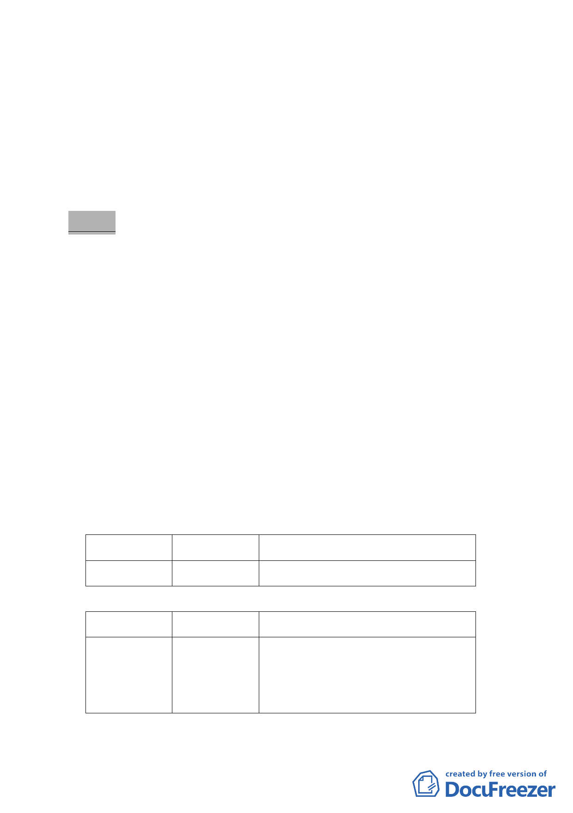

日合計審查通過推薦 40 案（至 12 月 31 日止計 41 案），粗估
可提供 16 公頃廣場式開放空間、29 公頃人行通道、3700 公尺
立體人行通道、26 公頃挑空室內開放空間及其他公益設施。
二、經統計所審查通過之推薦案件中，老舊社區案 18 件、科技產
業軸帶 16 件，交通樞紐、親水河域及老舊社區複合案件各 3
件，未來 40 案均將循都市計畫變更程序提送本會審議。
決 議：
一、本案因後續將送本會審議之都市計畫變更案多，且具時效性，
審議前應確保委員瞭解「都市再生臺北好好看」辦理內容與規
定，並期掌握每一個案審議基準的整體性與一致性。
二、為提昇審議效率，將所提案件類型分成科技軸帶組、老舊社區
A 組及 B 組、交通河域組 4 個專案小組分組審查，且臺北好好
看重點強化環境景觀的提昇，每個小組請景觀專業委員能參
與。
三、為時程把握，請市府發展局將個案分類整合公展後，逕由各專
案小組進行審查後再提委員會議審議。
四、小組委員名單分列如下，會議後幕僚將再洽詢委員參與意願，
歡迎每位委員踴躍參與提供寶貴建議：
科技軸帶組：
第一召集人 第二召集人 小 組 委 員
洪委員鴻智 姚委員仁喜
原則歡迎全體委員參與
老舊社區 A 組：
第一召集人 第二召集人 小 組 委 員
吳委員清輝 陳委員武正 洪委員寶川、喻委員肇青、郭委員肇立、
許委員中光、于委員俊明、羅委員孝賢、
邱委員大展
-2-